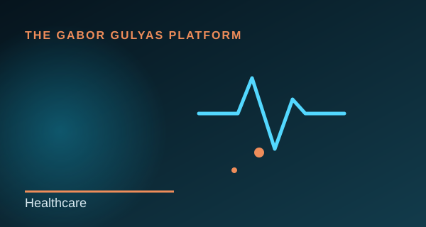

Experience
It All Started on an Ambulance
My first professional chapter was as a Paramedic responding to emergency calls.
Read more →Before business, technology and research, I worked as a Paramedic with the Hungarian National Ambulance Service, responding to emergency calls and providing pre-hospital emergency care.
Responsibility before hierarchy
Every shift demanded calm judgement, teamwork and responsibility. That was where I first learned that leadership is not always a job title; sometimes it is simply staying calm when others need direction.
A lesson that stayed with me
My experience as a Paramedic taught me that effective decisions are rarely made with perfect information. That lesson still influences how I approach operational problems, leadership and research.